Classifications
IsTrue <- function(x) { !is.na(x) & x }
load("_data/LSCMWG_working_data.RData")Classification with two variables on each dimensions for 1990
Classification <- function(health, gender,
df = data,
year_to_show = 1990,
min_to_include = 2 # this is not implemented well but works for the current setup
){
qs <- paste("q", 1:5, sep = "")
vars = c(health, gender)
df <- df[, c("country", "year", "period", vars)]
## creating 5-year averages
df <- df %>% group_by(country, period) %>%
mutate(across(all_of(vars), ~mean(.x, na.rm = TRUE), .names = "{col}_avg"), .keep = "all")
df <- df %>%
filter(year %in% seq(1970, 2015, 5)) %>% # I removed 2018 here, for consistent panels, with downstream implications
group_by(year)
df <- df %>% mutate(across(paste(vars, "avg", sep = "_"), ~quantile(.x, probs = seq(0, 1, 0.2), na.rm = TRUE)[2], .names = "{col}_q20"))
df <- df %>% mutate(across(paste(vars, "avg", sep = "_"), ~quantile(.x, probs = seq(0, 1, 0.2), na.rm = TRUE)[3], .names = "{col}_q40"))
df <- df %>% mutate(across(paste(vars, "avg", sep = "_"), ~quantile(.x, probs = seq(0, 1, 0.2), na.rm = TRUE)[4], .names = "{col}_q60"))
df <- df %>% mutate(across(paste(vars, "avg", sep = "_"), ~quantile(.x, probs = seq(0, 1, 0.2), na.rm = TRUE)[5], .names = "{col}_q80"))
df <- ungroup(df)
df[, paste(vars, "quintile", sep = "_")] <- parallel::mclapply(vars, function(var) {
col <- rep(NA, nrow(df))
col[df[, paste(var, "avg", sep = "_")] < df[, paste(var, "avg_q20", sep = "_")]] <- 1
col[df[, paste(var, "avg", sep = "_")] >= df[, paste(var, "avg_q20", sep = "_")] &
df[, paste(var, "avg", sep = "_")] < df[, paste(var, "avg_q40", sep = "_")]] <- 2
col[df[, paste(var, "avg", sep = "_")] >= df[, paste(var, "avg_q40", sep = "_")] &
df[, paste(var, "avg", sep = "_")] < df[, paste(var, "avg_q60", sep = "_")]] <- 3
col[df[, paste(var, "avg", sep = "_")] >= df[, paste(var, "avg_q60", sep = "_")] &
df[, paste(var, "avg", sep = "_")] < df[, paste(var, "avg_q80", sep = "_")]] <- 4
col[df[, paste(var, "avg", sep = "_")] >= df[, paste(var, "avg_q80", sep = "_")]] <- 5
return(col)
})
# df <- df[, c("country", "year", "period", names(df)[str_detect(names(df), fixed("quintile"))])]
# combis <- expand.grid(health = health, gender = gender, stringsAsFactors = FALSE)
# combis <- split(combis, seq(nrow(combis)))
df$health_q1 <- rowSums(df[, paste(health, "quintile", sep = "_")] == 1, na.rm = TRUE)
df$health_q2 <- rowSums(df[, paste(health, "quintile", sep = "_")] == 2, na.rm = TRUE)
df$health_q3 <- rowSums(df[, paste(health, "quintile", sep = "_")] == 3, na.rm = TRUE)
df$health_q4 <- rowSums(df[, paste(health, "quintile", sep = "_")] == 4, na.rm = TRUE)
df$health_q5 <- rowSums(df[, paste(health, "quintile", sep = "_")] == 5, na.rm = TRUE)
df$gender_q1 <- rowSums(df[, paste(gender, "quintile", sep = "_")] == 1, na.rm = TRUE)
df$gender_q2 <- rowSums(df[, paste(gender, "quintile", sep = "_")] == 2, na.rm = TRUE)
df$gender_q3 <- rowSums(df[, paste(gender, "quintile", sep = "_")] == 3, na.rm = TRUE)
df$gender_q4 <- rowSums(df[, paste(gender, "quintile", sep = "_")] == 4, na.rm = TRUE)
df$gender_q5 <- rowSums(df[, paste(gender, "quintile", sep = "_")] == 5, na.rm = TRUE)
health_vars <- paste("health", qs, sep = "_")
gender_vars <- paste("gender", qs, sep = "_")
df$health_valid <- rowSums(df[, health_vars])
df$gender_valid <- rowSums(df[, gender_vars])
df$valid <- df$health_valid * df$gender_valid
# unique(df$country[df$valid == 0])
df <- df[df$valid > 0, ]
### version based on the standardized vars
new <- df[, c("country", "year", paste(vars, "avg", sep = "_"))] %>%
group_by(year) %>%
mutate(across(paste(vars, "avg", sep = "_"), ~as.numeric(scale(.x)), .names = "{col}")) %>%
mutate(health = (imr_wpp_avg + life_exp_wpp_avg)/2,
gender = (asfr_adol_wpp_avg + mys_age_ratio_ihme_avg)/2) %>%
select(country, year, health, gender) %>%
ungroup()
new$health_class[new$health >= quantile(new$health, probs = seq(0, 1, 0.2), na.rm = TRUE)[1]] <- 1
new$health_class[new$health >= quantile(new$health, probs = seq(0, 1, 0.2), na.rm = TRUE)[2]] <- 2
new$health_class[new$health >= quantile(new$health, probs = seq(0, 1, 0.2), na.rm = TRUE)[3]] <- 3
new$health_class[new$health >= quantile(new$health, probs = seq(0, 1, 0.2), na.rm = TRUE)[4]] <- 4
new$health_class[new$health >= quantile(new$health, probs = seq(0, 1, 0.2), na.rm = TRUE)[5]] <- 5
new$gender_class[new$gender >= quantile(new$gender, probs = seq(0, 1, 0.2), na.rm = TRUE)[1]] <- 1
new$gender_class[new$gender >= quantile(new$gender, probs = seq(0, 1, 0.2), na.rm = TRUE)[2]] <- 2
new$gender_class[new$gender >= quantile(new$gender, probs = seq(0, 1, 0.2), na.rm = TRUE)[3]] <- 3
new$gender_class[new$gender >= quantile(new$gender, probs = seq(0, 1, 0.2), na.rm = TRUE)[4]] <- 4
new$gender_class[new$gender >= quantile(new$gender, probs = seq(0, 1, 0.2), na.rm = TRUE)[5]] <- 5
new$class <- paste("H", new$health_class, "G", new$gender_class, sep = "")
tab_st <- new %>% filter(year == 1990)
tab_st <- tapply(tab_st$country, list(health = tab_st$health_class, gender = tab_st$gender_class), paste, collapse = "; ")
tab_st[is.na(tab_st)] <- ""
dimnames(tab_st) <- lapply(dimnames(tab_st), function(name) { paste("Q", name, sep = "") })
### back to original version
df <- df[, !names(df) %in% unlist(lapply(c("q20", "q40", "q60", "q80", "quintile", health, gender), function(x) names(df)[str_detect(names(df), x)]))]
health_true <- df[, health_vars] == apply(df[, health_vars], MARGIN = 1, FUN = max)
gender_true <- df[, gender_vars] == apply(df[, gender_vars], MARGIN = 1, FUN = max)
health_help <- health_true * matrix(1:5, nrow = nrow(health_true), ncol = 5, byrow = TRUE)
gender_help <- gender_true * matrix(1:5, nrow = nrow(gender_true), ncol = 5, byrow = TRUE)
help_floor <- function(set) { return(floor(mean(set[set != 0]))) }
help_ceiling <- function(set) { return(ceiling(mean(set[set != 0]))) }
df$health_class <- apply(health_help, MARGIN = 1, help_floor)
df$gender_class <- apply(gender_help, MARGIN = 1, help_floor)
df$health_class_alt <- apply(health_help, MARGIN = 1, help_ceiling)
df$gender_class_alt <- apply(gender_help, MARGIN = 1, help_ceiling)
df$health_flag <- ifelse(df$health_class != df$health_class_alt, 1, 0)
df$gender_flag <- ifelse(df$gender_class != df$gender_class_alt, 1, 0)
health_index <- paste("health_q", df$health_class, sep = "")
gender_index <- paste("gender_q", df$gender_class, sep = "")
df$health_n <- unlist(lapply(1:length(health_index), function(index) {
as.integer(df[index, health_index[index]])
}))
df$gender_n <- unlist(lapply(1:length(gender_index), function(index) {
as.integer(df[index, gender_index[index]])
}))
df$combi <- df$health_n * df$gender_n
df$class <- paste("H", df$health_class, "G", df$gender_class, sep = "")
df$class_alt <- paste("H", df$health_class_alt, "G", df$gender_class_alt, sep = "")
test <- table(df[df$year == year_to_show & df$valid >= min_to_include, c("health_class", "gender_class")])
# print(test)
number_of_countries <- sum(test)
df$support <- paste(df$country, " (", df$combi, "/", df$valid, ")", sep = "")
dat <- df[df$year == year_to_show, ]
table_to_return <- tapply(dat$support,
INDEX = list(health = dat$health_class, gender = dat$gender_class),
paste, collapse = "; ")
table_to_return[is.na(table_to_return)] <- ""
dimnames(table_to_return) <- lapply(dimnames(table_to_return), function(name) { paste("Q", name, sep = "") })
## from here, this is the old way, to create the fuzzy table, not needed anymore but useful for comparison
df$H1G1 <- df$health_q1 * df$gender_q1
df$H2G1 <- df$health_q2 * df$gender_q1
df$H3G1 <- df$health_q3 * df$gender_q1
df$H4G1 <- df$health_q4 * df$gender_q1
df$H5G1 <- df$health_q5 * df$gender_q1
df$H1G2 <- df$health_q1 * df$gender_q2
df$H2G2 <- df$health_q2 * df$gender_q2
df$H3G2 <- df$health_q3 * df$gender_q2
df$H4G2 <- df$health_q4 * df$gender_q2
df$H5G2 <- df$health_q5 * df$gender_q2
df$H1G3 <- df$health_q1 * df$gender_q3
df$H2G3 <- df$health_q2 * df$gender_q3
df$H3G3 <- df$health_q3 * df$gender_q3
df$H4G3 <- df$health_q4 * df$gender_q3
df$H5G3 <- df$health_q5 * df$gender_q3
df$H1G4 <- df$health_q1 * df$gender_q4
df$H2G4 <- df$health_q2 * df$gender_q4
df$H3G4 <- df$health_q3 * df$gender_q4
df$H4G4 <- df$health_q4 * df$gender_q4
df$H5G4 <- df$health_q5 * df$gender_q4
df$H1G5 <- df$health_q1 * df$gender_q5
df$H2G5 <- df$health_q2 * df$gender_q5
df$H3G5 <- df$health_q3 * df$gender_q5
df$H4G5 <- df$health_q4 * df$gender_q5
df$H5G5 <- df$health_q5 * df$gender_q5
vars <- c("H1G1", "H2G1", "H3G1", "H4G1", "H5G1",
"H1G2", "H2G2", "H3G2", "H4G2", "H5G2",
"H1G3", "H2G3", "H3G3", "H4G3", "H5G3",
"H1G4", "H2G4", "H3G4", "H4G4", "H5G4",
"H1G5", "H2G5", "H3G5", "H4G5", "H5G5")
names(vars) <- vars
dat <- as.data.frame(df[df$year == year_to_show, c("country", "valid", vars)])
classifications <- parallel::mclapply(vars, function(var_name) {
new <- dat[dat[, var_name] >= min_to_include, c("country", var_name, "valid")]
countries <- new$country
new <- paste(new[, "country"], " (", new[, var_name], "/", new[, "valid"], ")", sep = "")
new <- new[new != " (/)"]
return(list(class = new, ctry = countries))
})
countries <- sort(unique(unlist(lapply(classifications, function(x) { x$ctry }))))
classifications <- lapply(classifications, function(class) { class$class })
classifications <- lapply(classifications, paste, collapse = "; ")
# print(matrix(names(classifications), 5, 5, dimnames = list(health = qs, gender = qs)))
fuzzy_table <- matrix(classifications, 5, 5, dimnames = list(health = qs, gender = qs))
# cat("Number of countries classified: ", number_of_countries, "\n")
# if(number_of_countries != length(countries)) {
# cat("\nNot classifying the same number of countries as the fuzzy way!")
# }
df <- df[, !names(df) %in% vars]
return(list(df = df, n = number_of_countries, table = table_to_return, fuzzy = fuzzy_table, standardized = new, table_std = tab_st))
}
result <- Classification(health = variables$health, gender = variables$gender)
kableExtra::kable(result$table, format = "html") %>%
kableExtra::kable_styling("striped") %>%
kableExtra::add_header_above(c(" " = 1, "Gender" = 5)) %>%
kableExtra::group_rows("Health", 1, 5)| Q1 | Q2 | Q3 | Q4 | Q5 | |
|---|---|---|---|---|---|
| Health | |||||
| Q1 | Afghanistan (4/4); Angola (4/4); Bangladesh (2/4); Benin (2/4); Bhutan (1/4); Burkina Faso (4/4); Cameroon (1/4); Central African Republic (4/4); Chad (4/4); Congo, DRC (4/4); Cote d’Ivoire (4/4); Equatorial Guinea (4/4); Gambia (2/4); Guinea (4/4); Guinea-Bissau (2/4); Liberia (4/4); Madagascar (2/4); Malawi (4/4); Mali (4/4); Mozambique (2/4); Nepal (2/4); Niger (4/4); Nigeria (2/4); Sierra Leone (4/4); Tanzania (2/4); Uganda (2/4); Zambia (2/4) | Burundi (2/4); Cambodia (1/4); Haiti (2/4); Laos (4/4); Pakistan (0/4); Rwanda (2/4); Somalia (0/4) | |||
| Q2 | India (2/4); Kenya (2/4); Senegal (4/4); Sudan (2/4); Togo (2/4); Yemen (4/4) | Bolivia (2/4); Comoros (4/4); Congo (2/4); Djibouti (0/4); Egypt (2/4); El Salvador (2/4); Eswatini (0/4); Gabon (0/4); Ghana (4/4); Guatemala (2/4); Indonesia (2/4); Iran (2/4); Maldives (0/4); Mauritania (4/4); Morocco (0/4); Nicaragua (0/4); Papua New Guinea (2/4); Sao Tome & Principe (4/4); Turkey (1/4); Zimbabwe (1/4) | Botswana (0/4); Dominican Republic (0/4); Kiribati (2/4); Myanmar (2/4); Namibia (0/4); Peru (2/4) | Lesotho (0/4); Mongolia (4/4) | |
| Q3 | Belize (1/4); Cape Verde (4/4); Honduras (0/4); Iraq (2/4); Oman (2/4); Saudi Arabia (0/4); Solomon Islands (4/4); Syria (1/4) | Algeria (2/4); China (0/4); Ecuador (2/4); Grenada (0/4); Guyana (2/4); Jordan (0/4); Libya (0/4); Mauritius (1/4); Mexico (2/4); Micronesia (2/4); Paraguay (2/4); South Africa (0/4); Suriname (4/4); Thailand (1/4); Tunisia (0/4); Vanuatu (4/4) | Albania (0/4); Brazil (0/4); Fiji (2/4); North Korea (0/4); Philippines (2/4); Samoa (1/4); Tonga (1/4); Trinidad & Tobago (0/4); Viet Nam (0/4) | ||
| Q4 | Bahrain (2/4); Brunei (1/4); Colombia (2/4); Costa Rica (0/4); Jamaica (0/4); Kuwait (2/4); Lebanon (2/4); Panama (0/4); Saint Lucia (0/4); Saint Vincent & the Grenadines (2/4); United Arab Emirates (4/4); Venezuela (0/4) | Antigua & Barbuda (0/4); Argentina (0/4); Bahamas (0/4); Barbados (2/4); Bulgaria (0/4); Chile (1/4); Hungary (2/4); Malaysia (0/4); Poland (2/4); Qatar (2/4); Romania (4/4); Seychelles (2/4); South Korea (0/4); Sri Lanka (4/4); Uruguay (2/4) | |||
| Q5 | Cuba (2/4); Cyprus (2/4) | Austria (2/4); Greece (0/4); Iceland (2/4); Israel (2/4); Italy (2/4); Japan (2/4); Luxembourg (2/4); Malta (2/4); Netherlands (2/4); New Zealand (2/4); Portugal (2/4); Singapore (0/4); Spain (2/4); Switzerland (0/4); Taiwan (0/4); United Kingdom (2/4); United States of America (2/4) | Australia (4/4); Belgium (4/4); Canada (4/4); Denmark (4/4); Finland (4/4); France (4/4); Ireland (4/4); Norway (4/4); Sweden (4/4) | ||
Fuzzy version of classification
kableExtra::kable(result$fuzzy, format = "html") %>%
kableExtra::kable_styling("striped") %>%
kableExtra::add_header_above(c(" " = 1, "Gender" = 5)) %>%
kableExtra::group_rows("Health", 1, 5)| q1 | q2 | q3 | q4 | q5 | |
|---|---|---|---|---|---|
| Health | |||||
| q1 | Afghanistan (4/4); Angola (4/4); Bangladesh (2/4); Benin (2/4); Burkina Faso (4/4); Central African Republic (4/4); Chad (4/4); Congo, DRC (4/4); Cote d’Ivoire (4/4); Equatorial Guinea (4/4); Gambia (2/4); Guinea (4/4); Guinea-Bissau (2/4); Liberia (4/4); Madagascar (2/4); Malawi (4/4); Mali (4/4); Mozambique (2/4); Nepal (2/4); Niger (4/4); Nigeria (2/4); Sierra Leone (4/4); Somalia (2/4); Tanzania (2/4); Uganda (2/4); Zambia (2/4) | Benin (2/4); Burundi (2/4); Guinea-Bissau (2/4); Haiti (2/4); Laos (4/4); Madagascar (2/4); Mozambique (2/4); Nepal (2/4); Nigeria (2/4); Rwanda (2/4); Tanzania (2/4); Uganda (2/4); Zambia (2/4) | Burundi (2/4); Haiti (2/4); Rwanda (2/4); Somalia (2/4) | ||
| q2 | Bangladesh (2/4); Djibouti (2/4); Gabon (2/4); Gambia (2/4); India (2/4); Kenya (2/4); Maldives (2/4); Senegal (4/4); Sudan (2/4); Togo (2/4); Yemen (4/4) | Bolivia (2/4); Comoros (4/4); Congo (2/4); Egypt (2/4); El Salvador (2/4); Ghana (4/4); Guatemala (2/4); India (2/4); Indonesia (2/4); Iran (2/4); Kenya (2/4); Mauritania (4/4); Papua New Guinea (2/4); Sao Tome & Principe (4/4); Sudan (2/4); Togo (2/4) | Bolivia (2/4); El Salvador (2/4); Guatemala (2/4); Indonesia (2/4); Kiribati (2/4); Lesotho (2/4); Maldives (2/4); Myanmar (2/4); Papua New Guinea (2/4); Peru (2/4) | Djibouti (2/4); Gabon (2/4); Kiribati (2/4); Mongolia (4/4); Myanmar (2/4) | Lesotho (2/4) |
| q3 | Honduras (2/4); Saudi Arabia (2/4); Tunisia (2/4) | Cape Verde (4/4); Congo (2/4); Egypt (2/4); Iran (2/4); Iraq (2/4); Libya (2/4); Oman (2/4); Solomon Islands (4/4); South Africa (2/4) | Algeria (2/4); Brazil (2/4); Ecuador (2/4); Guyana (2/4); Iraq (2/4); Mexico (2/4); Micronesia (2/4); Oman (2/4); Paraguay (2/4); Peru (2/4); Saudi Arabia (2/4); Suriname (4/4); Vanuatu (4/4) | Algeria (2/4); Ecuador (2/4); Fiji (2/4); Guyana (2/4); Honduras (2/4); Micronesia (2/4); Paraguay (2/4); Philippines (2/4); South Africa (2/4) | Brazil (2/4); Libya (2/4); Philippines (2/4); Tunisia (2/4) |
| q4 | Jamaica (2/4); Panama (2/4); Saint Lucia (2/4); Venezuela (2/4) | Antigua & Barbuda (2/4); Argentina (2/4); Bahamas (2/4); Bahrain (2/4); Colombia (2/4); Kuwait (2/4); Lebanon (2/4); Mexico (2/4); Saint Vincent & the Grenadines (2/4); United Arab Emirates (4/4) | Bahrain (2/4); Barbados (2/4); Colombia (2/4); Fiji (2/4); Hungary (2/4); Kuwait (2/4); Lebanon (2/4); Poland (2/4); Qatar (2/4); Romania (4/4); Saint Vincent & the Grenadines (2/4); Seychelles (2/4); Sri Lanka (4/4); Uruguay (2/4); Venezuela (2/4) | Antigua & Barbuda (2/4); Argentina (2/4); Bahamas (2/4); Hungary (2/4); Jamaica (2/4); Panama (2/4); Poland (2/4); Saint Lucia (2/4); Seychelles (2/4); Uruguay (2/4) | |
| q5 | Cuba (2/4); Cyprus (2/4); Greece (2/4); Singapore (2/4); Switzerland (2/4); Taiwan (2/4) | Austria (2/4); Barbados (2/4); Cuba (2/4); Cyprus (2/4); Iceland (2/4); Israel (2/4); Italy (2/4); Japan (2/4); Luxembourg (2/4); Malta (2/4); Netherlands (2/4); New Zealand (2/4); Portugal (2/4); Qatar (2/4); Spain (2/4); United Kingdom (2/4); United States of America (2/4) | Australia (4/4); Austria (2/4); Belgium (4/4); Canada (4/4); Denmark (4/4); Finland (4/4); France (4/4); Greece (2/4); Iceland (2/4); Ireland (4/4); Israel (2/4); Italy (2/4); Japan (2/4); Luxembourg (2/4); Malta (2/4); Netherlands (2/4); New Zealand (2/4); Norway (4/4); Portugal (2/4); Singapore (2/4); Spain (2/4); Sweden (4/4); Switzerland (2/4); Taiwan (2/4); United Kingdom (2/4); United States of America (2/4) | ||
New version of classification based on standardized data
kableExtra::kable(result$table_std, format = "html") %>%
kableExtra::kable_styling("striped") %>%
kableExtra::add_header_above(c(" " = 1, "Gender" = 5)) %>%
kableExtra::group_rows("Health", 1, 5)| Q1 | Q2 | Q3 | Q4 | Q5 | |
|---|---|---|---|---|---|
| Health | |||||
| Q1 | Afghanistan; Angola; Bangladesh; Benin; Bhutan; Burkina Faso; Cameroon; Central African Republic; Chad; Congo, DRC; Cote d’Ivoire; Equatorial Guinea; Guinea; Guinea-Bissau; Liberia; Malawi; Mali; Mozambique; Nepal; Niger; Nigeria; Sierra Leone; Tanzania; Uganda; Zambia | Bolivia; Burundi; Haiti; Laos; Madagascar; Rwanda; Somalia | |||
| Q2 | Gambia; Kenya; Pakistan; Senegal; Togo; Yemen | Cambodia; Comoros; Congo; Djibouti; Egypt; Eswatini; Gabon; Ghana; Guatemala; India; Iran; Maldives; Mauritania; Morocco; Nicaragua; Papua New Guinea; Sao Tome & Principe; Sudan; Zimbabwe | El Salvador; Indonesia; Myanmar; Namibia; Turkey | Kiribati | Lesotho; Mongolia |
| Q3 | Cape Verde; Iraq; Oman; Saudi Arabia; Solomon Islands | Algeria; Botswana; China; Dominican Republic; Ecuador; Guyana; Honduras; Libya; Mexico; Micronesia; Paraguay; Peru; South Africa; Suriname; Tunisia; Vanuatu | Brazil; Fiji; Trinidad & Tobago | Philippines; Samoa | |
| Q4 | Belize; Syria | Bahrain; Colombia; Grenada; Jamaica; Jordan; Mauritius; Panama; Saint Lucia; Saint Vincent & the Grenadines; United Arab Emirates; Venezuela | Antigua & Barbuda; Argentina; Bahamas; Brunei; Bulgaria; Chile; Kuwait; Lebanon; Malaysia; North Korea; Romania; Seychelles; South Korea; Thailand; Viet Nam | Albania; Hungary; Poland; Sri Lanka; Tonga; Uruguay | |
| Q5 | Cuba | Barbados; Costa Rica; Cyprus; Qatar; Singapore; Taiwan | Australia; Austria; Belgium; Canada; Denmark; Finland; France; Greece; Iceland; Ireland; Israel; Italy; Japan; Luxembourg; Malta; Netherlands; New Zealand; Norway; Portugal; Spain; Sweden; Switzerland; United Kingdom; United States of America | ||
variables$class <- c("class", "health_class", "gender_class", "health_class_alt", "gender_class_alt", "health_flag", "gender_flag")
df <- as.data.frame(result$standardized[, names(result$standardized) %in% c("country", "year", variables$class)])
# flagged <- df[df$year == 1990 & (df$health_flag == 1 | df$gender_flag == 1), c("country", variables$class)]
df$class_vv <- NA
df$class_vv[df$health_class < 3 & df$gender_class < 3] <- "low"
df$class_vv[df$health_class > 3 & df$gender_class > 3] <- "upp"
df$class_vv[!(df$health_class < 3 & df$gender_class < 3) & !(df$health_class > 3 & df$gender_class > 3)] <- "mid"
df$class_vv[df$class_vv == "mid" & df$health_class > df$gender_class] <- "H>G"
df$class_vv[df$class_vv == "mid" & df$health_class < df$gender_class] <- "G>H"
## alt
# df$class_vv_alt <- NA
# df$class_vv_alt[df$health_class_alt < 3 & df$gender_class_alt < 3] <- "low"
# df$class_vv_alt[df$health_class_alt > 3 & df$gender_class_alt > 3] <- "upp"
# df$class_vv_alt[!(df$health_class_alt < 3 & df$gender_class_alt < 3) & !(df$health_class_alt > 3 & df$gender_class_alt > 3)] <- "mid"
# df$class_vv_alt[df$class_vv_alt == "mid" & df$health_class_alt > df$gender_class_alt] <- "H>G"
# df$class_vv_alt[df$class_vv_alt == "mid" & df$health_class_alt < df$gender_class_alt] <- "G>H"
# addmargins(table(df$class_vv, df$class))
df$class_low <- ifelse(df$class_vv == "low", 1, 0)
df$class_upp <- ifelse(df$class_vv == "upp", 1, 0)
df$class_mid <- ifelse(df$class_vv == "mid", 1, 0)
df$class_HG <- ifelse(df$class_vv == "H>G", 1, 0)
df$class_GH <- ifelse(df$class_vv == "G>H", 1, 0)
variables$class_core <- c("country", "class", "health_class", "gender_class", "class_vv")
class1975 <- df[df$year == 1975, variables$class_core]
names(class1975) <- c("country", paste(c("class", "health", "gender", "class_vv"), 1975, sep = ""))
class1990 <- df[df$year == 1990, variables$class_core]
names(class1990) <- c("country", paste(c("class", "health", "gender", "class_vv"), 1990, sep = ""))
class1995 <- df[df$year == 1995, variables$class_core]
names(class1995) <- c("country", paste(c("class", "health", "gender", "class_vv"), 1995, sep = ""))
df <- merge(data, df, by = c("country", "year"), all = TRUE)
df <- merge(df, class1975, by = "country", all.x = TRUE)
df <- merge(df, class1990, by = "country", all.x = TRUE)
df <- merge(df, class1995, by = "country", all.x = TRUE)
df <- df[order(df$country, df$year),
c("country", "year", "period", names(df)[!names(df) %in% c("country", "year", "period")])]
filepath <- paste("~/Dropbox/Lancet-SIGHT Commission/Working Groups/Metrics/Datasets/dataset_cy_class", ".csv", sep = "" )
write_csv(df, file = filepath)Which countries move more than 2 cells?
df$class_num <- df$health_class * df$gender_class
names(years) <- years <- c(1990, 1995, 2015)
dat <- lapply(years, function(year) {
df <- as.data.frame(df[df$year == year, c("country", "class_num")])
names(df)[2] <- paste("class", year, sep = "")
return(df)
})
dat <- Reduce(f = function(...) merge(..., by = "country", all = TRUE), x = dat)
dat$diff <- dat$class2015 - dat$class1990
dat$diff_alt <- dat$class2015 - dat$class1995
better <- dat[IsTrue(dat$diff > 2 | dat$diff_alt > 2), ]
worse <- dat[IsTrue(dat$diff < -2 | dat$diff_alt < -2), ]
better worseRemoving countries with untrustworthy statistics
All data is subject to measurement error. This is particularly problematic if measurement is systematically biased. Without other data to validate a given measure, this is a very difficult to problem to overcome. We only use data from reputable sources, such as academic centre and international organizations, but some self-reported data are still suspect. The World Bank and some NGOs have attempted to rate the capacity of National Statistical System, and some countries are not inlcuded in their rankings because assessments could be not be made based on available information. For instance, the ODIN rankings from 2015 to 2018 do not include the Central African Republic, Eritrea, Equatorial Guinea, and North Korea. Interestingly, among these, only North Korea is relatively highly ranked on the gender and health dimensions according to these data, which is simply not believable. Therefore, we remove only North Korea from the analyses.
df <- df[df$country != "North Korea", ]Trends by classification groups over time
### making trend figures for the Dec 9 presentation
df_new <- df[df$year %in% 1965:2018,
c("country", "year", "class_vv", "life_exp_wpp", "imr_wpp", "mys_age_ratio_ihme", "asfr_adol_wpp")]
df_new <- df_new %>% group_by(year) %>% mutate(avg_life_exp_wpp = mean(life_exp_wpp, na.rm = TRUE))
df_new <- df_new %>% group_by(year) %>% mutate(avg_imr_wpp = -mean(imr_wpp, na.rm = TRUE))
df_new <- df_new %>% group_by(year) %>% mutate(avg_mys_age_ratio_ihme = mean(mys_age_ratio_ihme, na.rm = TRUE))
df_new <- df_new %>% group_by(year) %>% mutate(avg_asfr_adol_wpp = -mean(asfr_adol_wpp, na.rm = TRUE))
df_new <- unique(df_new[, c("year", "avg_life_exp_wpp", "avg_imr_wpp", "avg_mys_age_ratio_ihme", "avg_asfr_adol_wpp")])
df_low <- df[df$year %in% 1965:2018 & df$class_vv == "low",
c("country", "year", "class_vv", "life_exp_wpp", "imr_wpp", "mys_age_ratio_ihme", "asfr_adol_wpp")]
df_low <- df_low %>% group_by(year) %>% mutate(low_life_exp_wpp = mean(life_exp_wpp, na.rm = TRUE))
df_low <- df_low %>% group_by(year) %>% mutate(low_imr_wpp = -mean(imr_wpp, na.rm = TRUE))
df_low <- df_low %>% group_by(year) %>% mutate(low_mys_age_ratio_ihme = mean(mys_age_ratio_ihme, na.rm = TRUE))
df_low <- df_low %>% group_by(year) %>% mutate(low_asfr_adol_wpp = -mean(asfr_adol_wpp, na.rm = TRUE))
df_low <- unique(df_low[, c("year", "low_life_exp_wpp", "low_imr_wpp", "low_mys_age_ratio_ihme", "low_asfr_adol_wpp")])
df_upp <- df[df$year %in% 1965:2018 & df$class_vv == "upp",
c("country", "year", "class_vv", "life_exp_wpp", "imr_wpp", "mys_age_ratio_ihme", "asfr_adol_wpp")]
df_upp <- df_upp %>% group_by(year) %>% mutate(upp_life_exp_wpp = mean(life_exp_wpp, na.rm = TRUE))
df_upp <- df_upp %>% group_by(year) %>% mutate(upp_imr_wpp = -mean(imr_wpp, na.rm = TRUE))
df_upp <- df_upp %>% group_by(year) %>% mutate(upp_mys_age_ratio_ihme = mean(mys_age_ratio_ihme, na.rm = TRUE))
df_upp <- df_upp %>% group_by(year) %>% mutate(upp_asfr_adol_wpp = -mean(asfr_adol_wpp, na.rm = TRUE))
df_upp <- unique(df_upp[, c("year", "upp_life_exp_wpp", "upp_imr_wpp", "upp_mys_age_ratio_ihme", "upp_asfr_adol_wpp")])
df_mid <- df[df$year %in% 1965:2018 & df$class_vv == "mid",
c("country", "year", "class_vv", "life_exp_wpp", "imr_wpp", "mys_age_ratio_ihme", "asfr_adol_wpp")]
df_mid <- df_mid %>% group_by(year) %>% mutate(mid_life_exp_wpp = mean(life_exp_wpp, na.rm = TRUE))
df_mid <- df_mid %>% group_by(year) %>% mutate(mid_imr_wpp = -mean(imr_wpp, na.rm = TRUE))
df_mid <- df_mid %>% group_by(year) %>% mutate(mid_mys_age_ratio_ihme = mean(mys_age_ratio_ihme, na.rm = TRUE))
df_mid <- df_mid %>% group_by(year) %>% mutate(mid_asfr_adol_wpp = -mean(asfr_adol_wpp, na.rm = TRUE))
df_mid <- unique(df_mid[, c("year", "mid_life_exp_wpp", "mid_imr_wpp", "mid_mys_age_ratio_ihme", "mid_asfr_adol_wpp")])
df_Hlop <- df[df$year %in% 1965:2018 & df$class_vv == "H>G",
c("country", "year", "class_vv", "life_exp_wpp", "imr_wpp", "mys_age_ratio_ihme", "asfr_adol_wpp")]
df_Hlop <- df_Hlop %>% group_by(year) %>% mutate(HG_life_exp_wpp = mean(life_exp_wpp, na.rm = TRUE))
df_Hlop <- df_Hlop %>% group_by(year) %>% mutate(HG_imr_wpp = -mean(imr_wpp, na.rm = TRUE))
df_Hlop <- df_Hlop %>% group_by(year) %>% mutate(HG_mys_age_ratio_ihme = mean(mys_age_ratio_ihme, na.rm = TRUE))
df_Hlop <- df_Hlop %>% group_by(year) %>% mutate(HG_asfr_adol_wpp = -mean(asfr_adol_wpp, na.rm = TRUE))
df_Hlop <- unique(df_Hlop[, c("year", "HG_life_exp_wpp", "HG_imr_wpp", "HG_mys_age_ratio_ihme", "HG_asfr_adol_wpp")])
df_Glop <- df[df$year %in% 1965:2018 & df$class_vv == "G>H",
c("country", "year", "class_vv", "life_exp_wpp", "imr_wpp", "mys_age_ratio_ihme", "asfr_adol_wpp")]
df_Glop <- df_Glop %>% group_by(year) %>% mutate(GH_life_exp_wpp = mean(life_exp_wpp, na.rm = TRUE))
df_Glop <- df_Glop %>% group_by(year) %>% mutate(GH_imr_wpp = -mean(imr_wpp, na.rm = TRUE))
df_Glop <- df_Glop %>% group_by(year) %>% mutate(GH_mys_age_ratio_ihme = mean(mys_age_ratio_ihme, na.rm = TRUE))
df_Glop <- df_Glop %>% group_by(year) %>% mutate(GH_asfr_adol_wpp = -mean(asfr_adol_wpp, na.rm = TRUE))
df_Glop <- unique(df_Glop[, c("year", "GH_life_exp_wpp", "GH_imr_wpp", "GH_mys_age_ratio_ihme", "GH_asfr_adol_wpp")])
df_new <- merge(df_new, df_low, by = "year", all = TRUE)
df_new <- merge(df_new, df_mid, by = "year", all = TRUE)
df_new <- merge(df_new, df_Hlop, by = "year", all = TRUE)
df_new <- merge(df_new, df_Glop, by = "year", all = TRUE)
df_new <- merge(df_new, df_upp, by = "year", all = TRUE)Life expectancy
# pdf(file = paste("_SIGHT_draft_report/trend_life_exp_wpp.pdf", sep = ""), width = 10, height = 5)
par(mar = c(3, 2, 0, 1) + 0.1)
dat <- na.omit(df_new[, c("year", "avg_life_exp_wpp", "low_life_exp_wpp", "HG_life_exp_wpp", "GH_life_exp_wpp", "mid_life_exp_wpp", "upp_life_exp_wpp")])
matplot(x = dat$year, y = dat[, -1], type = "l", xlab = "", ylab = "",
main = "", lwd = 2, lty = "solid", col = c("black", "red","orange", "purple", "green", "blue"))
legend("bottomright", legend = c("global average", "low classification", "H>G classification", "G>H classification", "mid classification", "high classification"),
lty = "solid", lwd = 2, col = c("black", "red","orange", "purple", "green", "blue"))
# dev.off()IMR
# pdf(file = paste("_SIGHT_draft_report/trend_imr_wpp.pdf", sep = ""), width = 10, height = 5)
par(mar = c(3, 2, 0, 1) + 0.1)
dat <- na.omit(df_new[, c("year", "avg_imr_wpp", "low_imr_wpp", "HG_imr_wpp", "GH_imr_wpp", "mid_imr_wpp", "upp_imr_wpp")])
matplot(x = dat$year, y = dat[, -1], type = "l", xlab = "", ylab = "",
main = "", lwd = 2, lty = "solid", col = c("black", "red","orange", "purple", "green", "blue"))
legend("topright", legend = c("global average", "low classification", "H>G classification", "G>H classification", "mid classification", "high classification"),
lty = "solid", lwd = 2, col = c("black", "red","orange", "purple", "green", "blue"))
# dev.off()MYS
# pdf(file = paste("_SIGHT_draft_report/trend_mys_age_ratio_ihme.pdf", sep = ""), width = 10, height = 5)
par(mar = c(3, 2, 0, 1) + 0.1)
dat <- na.omit(df_new[, c("year", "avg_mys_age_ratio_ihme", "low_mys_age_ratio_ihme", "HG_mys_age_ratio_ihme", "GH_mys_age_ratio_ihme", "mid_mys_age_ratio_ihme", "upp_mys_age_ratio_ihme")])
matplot(x = dat$year, y = dat[, -1], type = "l", xlab = "", ylab = "",
main = "", lwd = 2, lty = "solid", col = c("black", "red","orange", "purple", "green", "blue"))
legend("bottomright", legend = c("global average", "low classification", "H>G classification", "G>H classification", "mid classification", "high classification"),
lty = "solid", lwd = 2, col = c("black", "red","orange", "purple", "green", "blue"))
# dev.off()ASFR
# pdf(file = paste("_SIGHT_draft_report/trend_asfr_adol_wpp.pdf", sep = ""), width = 10, height = 5)
par(mar = c(3, 2, 0, 1) + 0.1)
dat <- na.omit(df_new[, c("year", "avg_asfr_adol_wpp", "low_asfr_adol_wpp", "HG_asfr_adol_wpp", "GH_asfr_adol_wpp", "mid_asfr_adol_wpp", "upp_asfr_adol_wpp")])
matplot(x = dat$year, y = dat[, -1], type = "l", xlab = "", ylab = "",
main = "", lwd = 2, lty = "solid", col = c("black", "red","orange", "purple", "green", "blue"))
legend("topright", legend = c("global average", "low classification", "H>G classification", "G>H classification", "mid classification", "high classification"),
lty = "solid", lwd = 2, col = c("black", "red","orange", "purple", "green", "blue"))
# dev.off()Trends by 1995 classification groups
Health & gender
summary(as.factor(df$class_vv1990))
summary(as.factor(df$class_vv1995))
lapply(c(variables$health_full, variables$gender_full), function(var) {
dat <- df[!is.na(df$class_vv1995) & df$class_vv1995 != "mid", ]
ggplot(dat, aes(x = year, y = !!sym(var), group = class_vv1995, color = class_vv1995)) +
stat_summary(fun="mean", geom="line", na.rm = TRUE, size = 1) +
xlim(1980, 2018) +
theme_bw() +
ggtitle(paste(var, "average by 1995 classification over time"))
}) 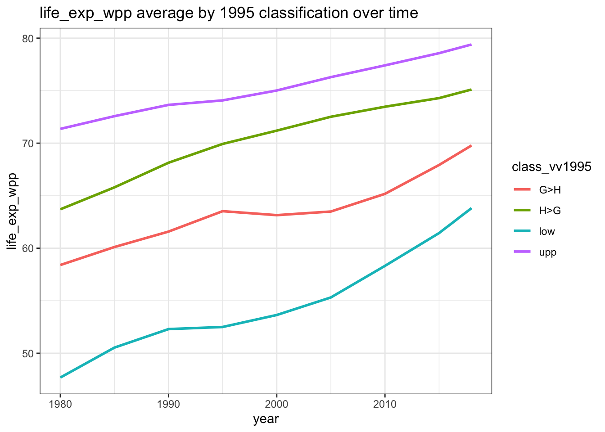
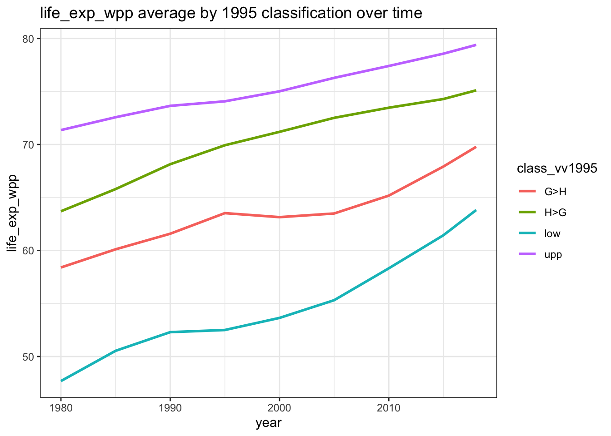

 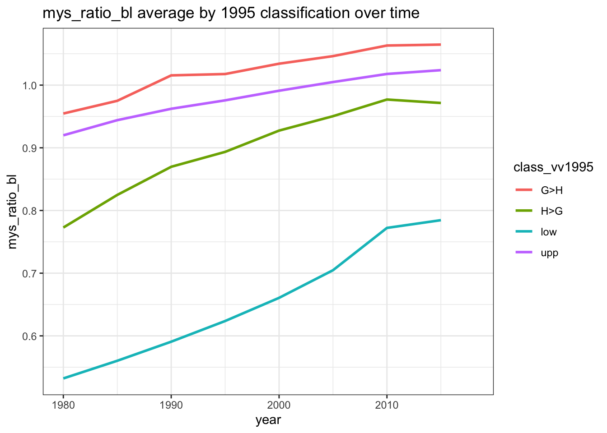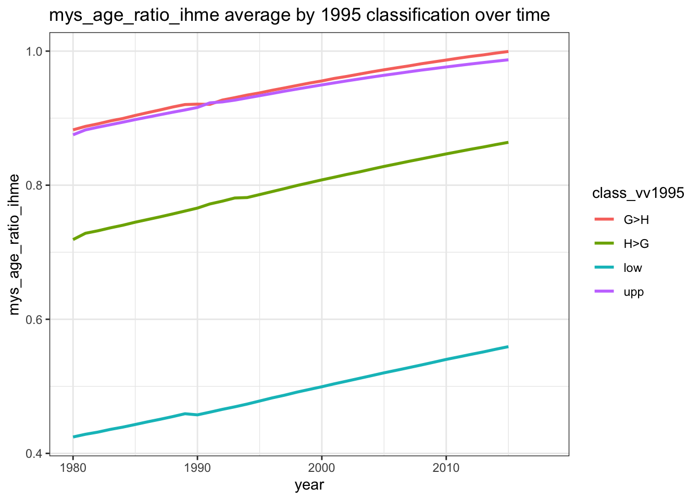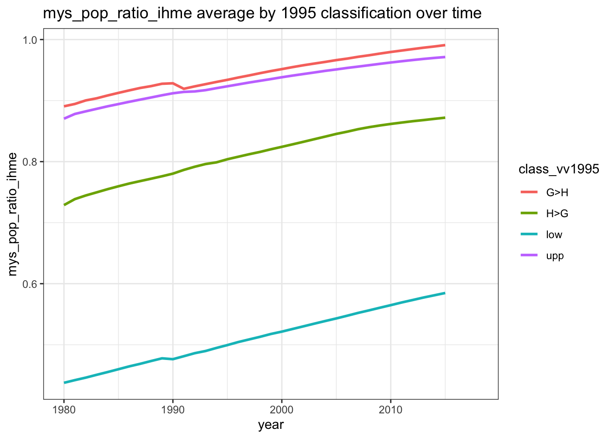
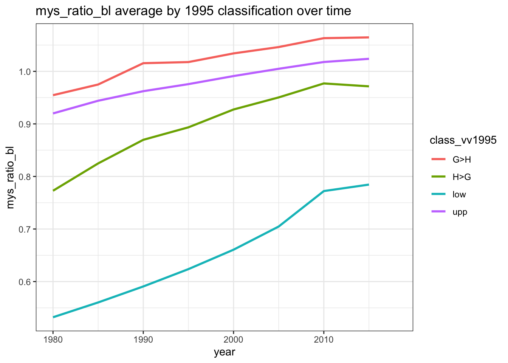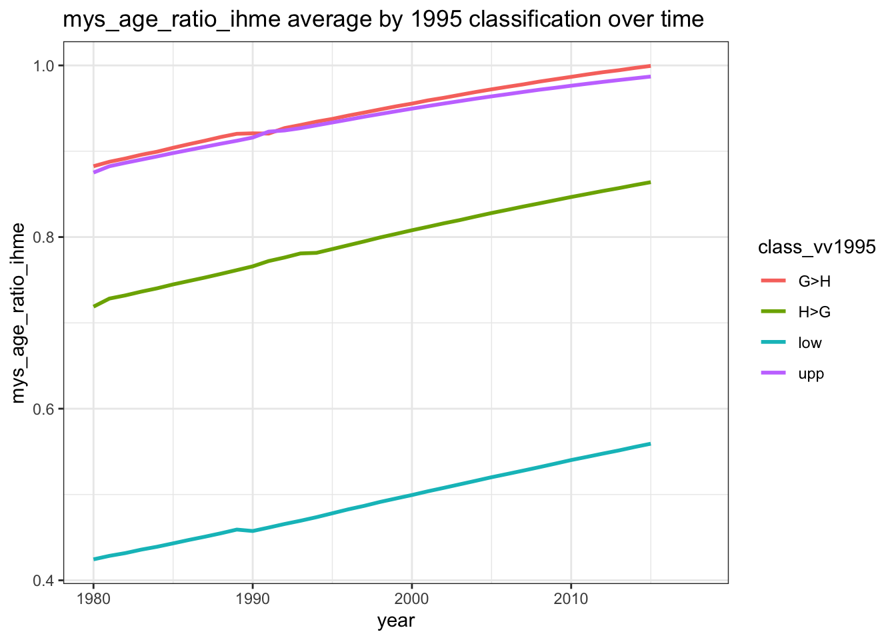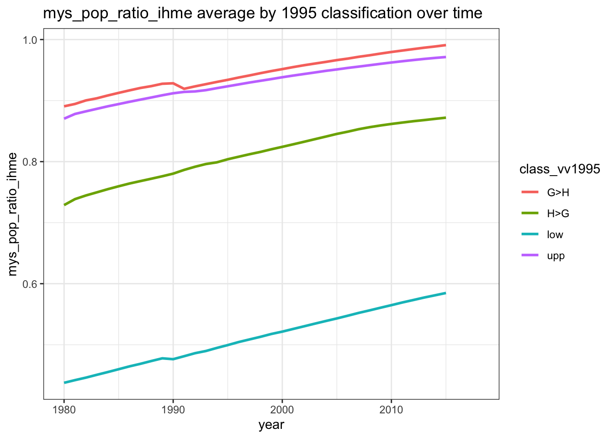
Cumulative death rates
lapply(variables$death_rates, function(var) {
dat <- df[!is.na(df$class_vv1995) & df$class_vv1995 != "mid", ]
ggplot(dat, aes(x = year, y = log(!!sym(paste(var, "cumulative1991", sep = "_")) + 1),
group = class_vv1995, color = class_vv1995)) +
stat_summary(fun="mean", geom="line", na.rm = TRUE, size = 1) +
xlim(1990, 2018) +
theme_bw() +
ggtitle(paste(var, "annual cumulative average (logged) since 1991 by 1995 classification"))
})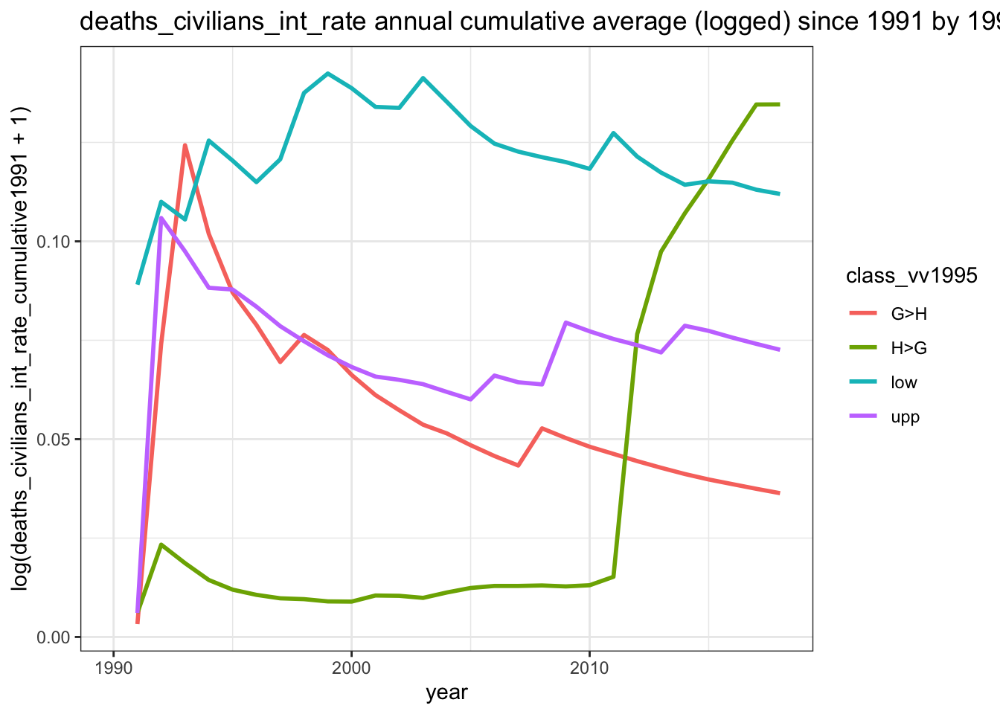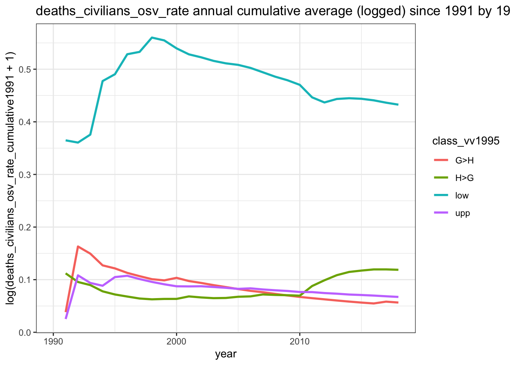


Cumulative repression
lapply(variables$measurement_models, function(var) {
dat <- df[!is.na(df$class_vv1995) & df$class_vv1995 != "mid", ]
ggplot(dat, aes(x = year, y = !!sym(paste(var, "cumulative1991", sep = "_")),
group = class_vv1995, color = class_vv1995)) +
stat_summary(fun="mean", geom="line", na.rm = TRUE, size = 1) +
xlim(1990, 2018) +
theme_bw() +
ggtitle(paste(var, "annual cumulative average since 1991 by 1995 classification"))
}) 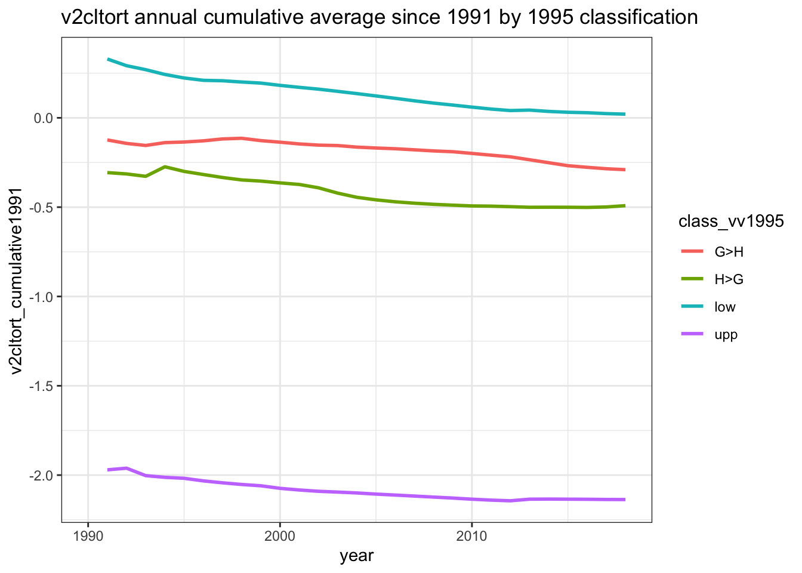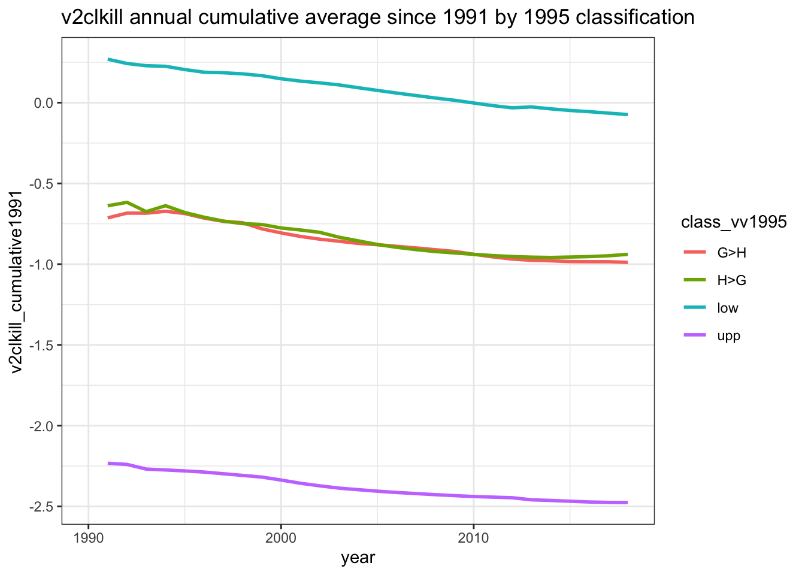
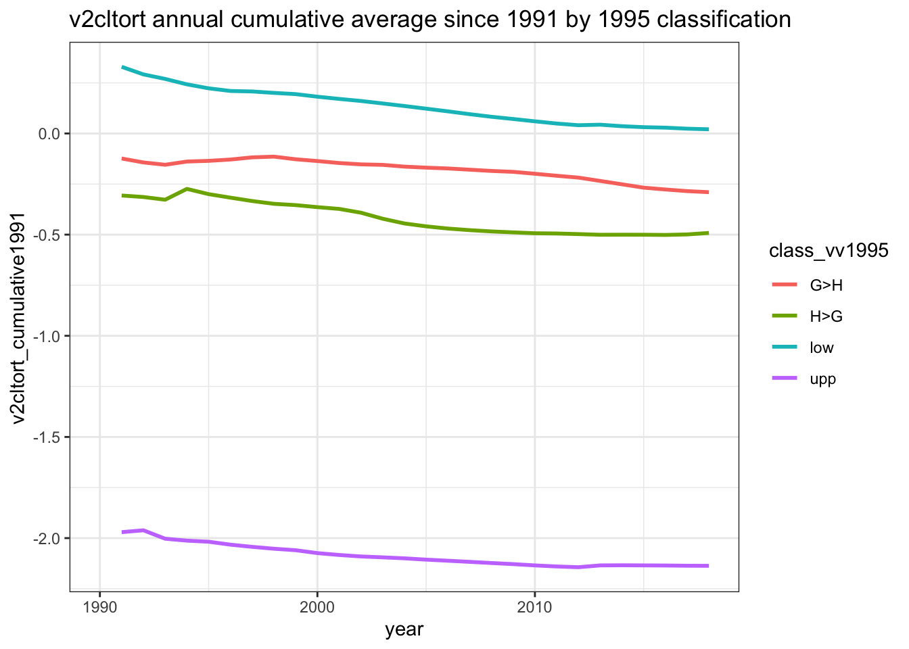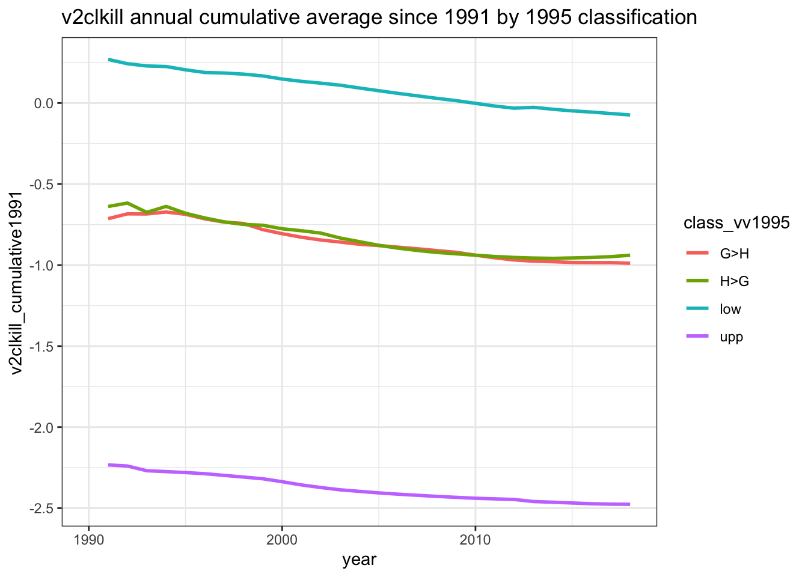
Conflict incidence
lapply(variables$conflict_incidence, function(var) {
dat <- df[df$year > 1988, ]
tbl <- tapply(dat[, var], list(health = dat$health1995, gender = dat$gender1995), mean, na.rm = TRUE)
dat <- dat[!is.na(dat$class_vv1995) & dat$class_vv1995 != "mid", ]
plot <- ggplot(dat, aes(x = year, y = !!sym(var), group = class_vv1995, color = class_vv1995)) +
stat_summary(fun="mean", geom="line", na.rm = TRUE, size = 1) +
xlim(1989, 2018) +
theme_bw() +
ggtitle(paste(var, " incidence by classification in 1995"))
return(list(tbl, plot))
})


covariates <- c("pc_rgdpe_pwt", "life_exp_wpp", "imr_wpp", "mys_ratio_hdr", "mys_age_ratio_ihme", "asfr_adol_wpp")
covariates <- paste(covariates, "avg", sep = "_")
# covariates <- c(covariates, "oda_provided_const_wdi", "oda_received_perc_gov_exp_wdi", "oda_aid_received_const_wdi", "oda_received_const_wdi", "oda_received_perc_imports_wdi", "aid_received_const_wdi")
vars <- unlist(lapply(covariates, function(var) { names(df)[str_detect(names(df), var)] }))
vars <- unique(vars[vars != "pasfr_adol_wpp"])
include <- c("country", "class", "class_vv", "class_low", "class_upp", vars)
new1990 <- df[df$year == 1990, c(include, variables$death_rates, variables$measurement_models)]
new1995 <- df[df$year == 1995, c(include, variables$death_rates, variables$measurement_models,
paste(variables$conflict_incidence, "cumulative1989", sep = "_"),
paste(variables$political, "cumulative1991", sep = "_"))]
new2015 <- df[df$year == 2015, c(include,
paste(c(variables$death_rates, variables$measurement_models), "cumulative1991", sep = "_"),
paste(c(variables$death_rates, variables$measurement_models), "cumulative1996", sep = "_"),
paste(variables$conflict_incidence, "cumulative1991", sep = "_"),
paste(variables$conflict_incidence, "cumulative1996", sep = "_"),
paste(variables$political, "cumulative1991", sep = "_"),
paste(variables$political, "cumulative1996", sep = "_"))]
names(new1990)[names(new1990) != "country"] <- paste(names(new1990)[names(new1990) != "country"], "1990", sep = "_")
names(new1995)[names(new1995) != "country"] <- paste(names(new1995)[names(new1995) != "country"], "1995", sep = "_")
names(new2015)[names(new2015) != "country"] <- paste(names(new2015)[names(new2015) != "country"], "2015", sep = "_")
new <- merge(new1990, new1995, by = c("country"), all = TRUE)
new <- merge(new, new2015, by = c("country"), all = TRUE)
## growth vars
new$pc_rgdpe_avg_growth1990_2015 <- new$pc_rgdpe_pwt_avg_2015 - new$pc_rgdpe_pwt_avg_1990
new$pc_rgdpe_avg_growth1995_2015 <- new$pc_rgdpe_pwt_avg_2015 - new$pc_rgdpe_pwt_avg_1995
new$life_exp_wpp_avg_growth1990_2015 <- new$life_exp_wpp_avg_2015 - new$life_exp_wpp_avg_1990
new$life_exp_wpp_avg_growth1995_2015 <- new$life_exp_wpp_avg_2015 - new$life_exp_wpp_avg_1995
new$imr_wpp_avg_growth1990_2015 <- new$imr_wpp_avg_2015 - new$imr_wpp_avg_1990
new$imr_wpp_avg_growth1995_2015 <- new$imr_wpp_avg_2015 - new$imr_wpp_avg_1995
new$mys_ratio_hdr_avg_growth1990_2015 <- new$mys_ratio_hdr_avg_2015 - new$mys_ratio_hdr_avg_1990
new$mys_age_ratio_ihme_avg_growth1990_2015 <- new$mys_age_ratio_ihme_avg_2015 - new$mys_age_ratio_ihme_avg_1990
new$asfr_adol_wpp_avg_growth1990_2015 <- new$asfr_adol_wpp_avg_2015 - new$asfr_adol_wpp_avg_1990
new$asfr_adol_wpp_avg_growth1995_2015 <- new$asfr_adol_wpp_avg_2015 - new$asfr_adol_wpp_avg_1995
new$mys_ratio_hdr_avg_growth1995_2015 <- new$mys_ratio_hdr_avg_2015 - new$mys_ratio_hdr_avg_1995
new$mys_age_ratio_ihme_avg_growth1995_2015 <- new$mys_age_ratio_ihme_avg_2015 - new$mys_age_ratio_ihme_avg_1995
# summary(new[, c("mys_ratio_hdr_avg_growth1990_2015", "mys_ratio_hdr_avg_growth1995_2015", "mys_age_ratio_ihme_avg_growth1990_2015")])
## logged version of pcGDP growth vars; need to account for negative values
new$lg_pc_rgdpe_avg_growth1990_2015[IsTrue(new$pc_rgdpe_avg_growth1990_2015 < 0)] <- log(-new$pc_rgdpe_avg_growth1990_2015[IsTrue(new$pc_rgdpe_avg_growth1990_2015 < 0)])
new$lg_pc_rgdpe_avg_growth1990_2015[IsTrue(new$pc_rgdpe_avg_growth1990_2015 >= 0)] <- log(new$pc_rgdpe_avg_growth1990_2015[IsTrue(new$pc_rgdpe_avg_growth1990_2015 >= 0)])
new$lg_pc_rgdpe_avg_growth1995_2015[IsTrue(new$pc_rgdpe_avg_growth1995_2015 < 0)] <- log(-new$pc_rgdpe_avg_growth1995_2015[IsTrue(new$pc_rgdpe_avg_growth1995_2015 < 0)])
new$lg_pc_rgdpe_avg_growth1995_2015[IsTrue(new$pc_rgdpe_avg_growth1995_2015 >= 0)] <- log(new$pc_rgdpe_avg_growth1995_2015[IsTrue(new$pc_rgdpe_avg_growth1995_2015 >= 0)])
## performance versions of growth measures
CodePerformance <- function(y_var, x_vars, show = FALSE, prefix = "perf") {
x_vars <- paste(x_vars, collapse = " + ")
equation <- paste(y_var, " ~ ", x_vars, sep = "")
# print(equation)
df <- na.omit(get_all_vars(formula = equation, data = new, country = country))
mod <- lm(formula = equation, data = df)
df$predicted <- predict(mod)
df[, paste(prefix, y_var, sep = "_")] <- df[, y_var] - df$predicted
if(show) print(df)
return(invisible(df[, c("country", paste(prefix, y_var, sep = "_"))]))
}
vars <- c("life_exp_wpp", "imr_wpp", "mys_ratio_hdr", "mys_age_ratio_ihme", "asfr_adol_wpp")
performance_measures <- unlist(lapply(c(1990, 1995), function(year) {
unlist(lapply(paste(vars, "avg", sep = "_"), function(var) {
return(list(
CodePerformance(y_var = paste(var, "_growth", year, "_2015", sep = ""),
x_vars = paste(c(str_replace(paste("lg", var, sep = "_"), "lg_mys", "mys"), "lg_pc_rgdpe_pwt_avg"), year, sep = "_")),
CodePerformance(y_var = paste(var, "_growth", year, "_2015", sep = ""),
x_vars = c(paste(c(str_replace(paste("lg", var, sep = "_"), "lg_mys", "mys"), "lg_pc_rgdpe_pwt_avg"), year, sep = "_"),
paste("lg_pc_rgdpe_avg_growth", year, "_2015", sep = "")), prefix = "perfv2")
))
}), recursive = FALSE)
}), recursive = FALSE)
performance_measures <- Reduce(f = function(...) merge(..., by = "country", all = TRUE), x = performance_measures)
new <- merge(new, performance_measures, by = "country", all = TRUE)
filepath <- "~/Dropbox/Lancet-SIGHT Commission/Working Groups/Metrics/Datasets/dataset_crosssectional.csv"
write.csv(new, file = filepath)Performance Rankings within classification groups
Performance <- function(category, year, vars) {
countries <- unique(df$country[df$year == year & df$class_vv %in% category])
countries <- countries[!is.na(countries)]
lapply(vars, function(var) {
var <- paste(var, "_growth", year, "_2015", sep = "")
# other <- paste(c("deaths_all_ucdp_rate_cumulative"), year + 1, "_2015", sep = "")
other <- NULL
select_vars <- c("country", var, paste("perf", var, sep = "_"), other)
# select_vars[!select_vars %in% names(new)]
dat <- new[new$country %in% countries, select_vars]
dat[order(dat[, var], decreasing = TRUE, na.last = NA), ]
})
}Low classification
Performance(category = "low", year = 1995, vars = paste(c(variables$health, variables$gender), "avg", sep = "_"))## [[1]]
## country imr_wpp_avg_growth1995_2015 perf_imr_wpp_avg_growth1995_2015
## 146 Rwanda 156.846 101.3912469
## 99 Liberia 95.964 42.3135927
## 121 Mozambique 75.594 24.3805636
## 106 Malawi 74.605 26.2162437
## 129 Niger 73.804 25.1857254
## 60 Ethiopia 68.205 19.9730276
## 5 Angola 66.809 18.8077701
## 158 Sierra Leone 65.676 14.6778973
## 200 Zambia 63.350 16.4489691
## 105 Madagascar 63.279 18.7793525
## 72 Guinea 62.458 16.7649099
## 177 Tanzania 58.400 12.3700402
## 28 Burundi 58.220 11.3166145
## 73 Guinea-Bissau 56.778 9.6293383
## 29 Cambodia 55.983 13.8259968
## 14 Bangladesh 55.101 13.1711233
## 125 Nepal 53.220 10.8322366
## 108 Maldives 51.451 18.5557804
## 130 Nigeria 50.889 1.0561729
## 95 Laos 50.837 7.0510642
## 21 Bolivia 50.737 11.1058381
## 1 Afghanistan 50.233 NA
## 163 Somalia 49.977 NA
## 57 Eritrea 49.419 NA
## 109 Mali 48.481 -0.6620037
## 152 Sao Tome & Principe 47.294 7.1802441
## 187 Uganda 46.314 0.5358980
## 20 Bhutan 45.121 7.1970863
## 79 India 43.026 2.1733029
## 56 Equatorial Guinea 42.222 -3.1673876
## 54 Egypt 40.630 6.4997798
## 198 Yemen 40.258 -2.8373762
## 27 Burkina Faso 39.229 -6.0936007
## 40 Congo, DRC 36.507 -9.6027826
## 34 Chad 34.977 -12.1948112
## 19 Benin 34.516 -10.1682122
## 154 Senegal 33.307 -4.2066406
## 42 Cote d'Ivoire 32.958 -9.6907554
## 133 Pakistan 32.943 -9.5867229
## 90 Kenya 32.477 -5.8731049
## 30 Cameroon 32.255 -10.8602168
## 170 Sudan 32.087 -7.7815213
## 75 Haiti 31.413 -11.8173675
## 71 Guatemala 28.370 -3.9739344
## 180 Togo 27.726 -13.5025632
## 68 Ghana 27.665 -9.7415634
## 65 Gambia 26.241 -11.9742576
## 38 Comoros 22.888 -15.7295000
## 39 Congo 22.552 -13.8280220
## 64 Gabon 21.617 -10.7171053
## 33 Central African Republic 20.741 -25.5105135
## 49 Djibouti 20.429 -17.9410187
## 137 Papua New Guinea 15.575 NA
## 112 Mauritania 11.458 -25.0636787
## 201 Zimbabwe 10.623 -22.6191495
## 59 Eswatini 2.495 -28.0220329
##
## [[2]]
## country life_exp_wpp_avg_growth1995_2015 perf_life_exp_wpp_avg_growth1995_2015
## 146 Rwanda 44.00 15.887747430
## 60 Ethiopia 15.63 5.650604136
## 187 Uganda 14.94 2.734341608
## 20 Bhutan 14.60 5.902054533
## 99 Liberia 14.53 3.932732807
## 129 Niger 14.15 2.063389579
## 158 Sierra Leone 13.86 -2.708903706
## 106 Malawi 13.42 1.917542135
## 29 Cambodia 13.34 5.347301573
## 108 Maldives 13.05 7.081762484
## 200 Zambia 12.93 1.459055416
## 57 Eritrea 12.65 NA
## 5 Angola 12.50 -0.406194854
## 125 Nepal 12.05 5.003278586
## 28 Burundi 11.89 1.070162432
## 105 Madagascar 11.84 3.192407111
## 21 Bolivia 11.60 4.147106824
## 177 Tanzania 11.24 1.590811277
## 95 Laos 11.06 3.003057400
## 14 Bangladesh 10.89 4.856441365
## 1 Afghanistan 10.36 NA
## 152 Sao Tome & Principe 10.24 3.494115297
## 163 Somalia 9.90 NA
## 109 Mali 9.66 -1.319081995
## 27 Burkina Faso 9.38 -0.633706951
## 71 Guatemala 8.85 3.133598785
## 79 India 8.65 2.328120425
## 40 Congo, DRC 8.51 -1.392926482
## 154 Senegal 8.15 0.728311568
## 73 Guinea-Bissau 8.03 -3.020247189
## 39 Congo 7.94 -0.812666615
## 121 Mozambique 7.92 -2.883405004
## 198 Yemen 7.81 1.934690565
## 170 Sudan 7.76 -0.009722093
## 65 Gambia 7.42 -1.993349661
## 90 Kenya 7.26 -0.793547597
## 72 Guinea 6.69 -3.566400225
## 56 Equatorial Guinea 6.55 -3.836150330
## 75 Haiti 6.38 -1.306531050
## 130 Nigeria 6.08 -4.906842686
## 137 Papua New Guinea 5.42 NA
## 54 Egypt 5.39 0.587752636
## 133 Pakistan 5.20 -1.076647529
## 34 Chad 5.09 -6.001903473
## 38 Comoros 5.01 -2.628062944
## 19 Benin 4.79 -2.880279864
## 49 Djibouti 4.53 -3.142629792
## 68 Ghana 4.04 -3.429555479
## 30 Cameroon 3.68 -5.726241869
## 180 Togo 3.30 -4.268038482
## 112 Mauritania 3.06 -3.680175550
## 64 Gabon 2.69 -4.934800652
## 201 Zimbabwe 2.27 -7.247775492
## 42 Cote d'Ivoire 1.97 -7.449719925
## 33 Central African Republic 0.79 -9.806296174
## 59 Eswatini -10.23 -17.519774205
##
## [[3]]
## country asfr_adol_wpp_avg_growth1995_2015 perf_asfr_adol_wpp_avg_growth1995_2015
## 108 Maldives 91.781 60.1260834
## 198 Yemen 78.568 48.5909037
## 20 Bhutan 72.961 43.7194134
## 64 Gabon 71.596 29.9070444
## 79 India 65.924 39.9831798
## 1 Afghanistan 63.132 NA
## 65 Gambia 61.531 26.3442704
## 30 Cameroon 56.723 19.6673251
## 125 Nepal 55.789 25.6220926
## 14 Bangladesh 54.862 22.5316196
## 158 Sierra Leone 51.224 15.4197319
## 71 Guatemala 49.724 15.7309105
## 57 Eritrea 49.605 NA
## 5 Angola 45.600 5.4169197
## 187 Uganda 45.266 11.3265250
## 59 Eswatini 43.877 8.4569439
## 34 Chad 39.874 2.1915578
## 60 Ethiopia 39.696 13.5753874
## 154 Senegal 39.530 7.8442646
## 133 Pakistan 38.512 13.0620414
## 95 Laos 37.221 10.0104961
## 72 Guinea 34.428 -3.8228739
## 38 Comoros 33.755 3.0158128
## 68 Ghana 32.062 2.5447268
## 73 Guinea-Bissau 30.469 -1.3395534
## 19 Benin 30.401 0.6517475
## 56 Equatorial Guinea 29.482 -8.4569928
## 27 Burkina Faso 29.414 -1.8426472
## 105 Madagascar 29.174 -2.8526655
## 90 Kenya 29.107 -1.1513961
## 121 Mozambique 28.210 -4.8440344
## 170 Sudan 28.040 -0.7632682
## 130 Nigeria 26.383 -2.5795097
## 112 Mauritania 24.939 -5.1569491
## 54 Egypt 24.676 -1.3977047
## 28 Burundi 24.075 1.7491800
## 152 Sao Tome & Principe 23.893 -6.5644302
## 49 Djibouti 23.754 6.9814361
## 42 Cote d'Ivoire 23.647 -10.7896306
## 99 Liberia 22.375 -7.6176637
## 129 Niger 22.023 -15.7801338
## 200 Zambia 20.739 -11.9893116
## 137 Papua New Guinea 19.258 NA
## 21 Bolivia 19.241 -8.2675732
## 146 Rwanda 18.179 1.2231159
## 29 Cambodia 17.965 -2.0200652
## 177 Tanzania 17.539 -12.5937879
## 109 Mali 17.434 -17.3424139
## 75 Haiti 16.708 -4.8968046
## 33 Central African Republic 16.290 -16.0506019
## 180 Togo 15.749 -12.0272470
## 106 Malawi 15.100 -17.5640206
## 39 Congo 7.054 -24.1600097
## 40 Congo, DRC -2.239 -31.5534031
## 201 Zimbabwe -6.097 -37.7896235
## 163 Somalia -8.646 NA
##
## [[4]]
## country mys_age_ratio_ihme_avg_growth1995_2015 perf_mys_age_ratio_ihme_avg_growth1995_2015
## 30 Cameroon 0.14648554 0.0612413070
## 170 Sudan 0.13626133 0.0447494566
## 130 Nigeria 0.12344002 0.0336568216
## 39 Congo 0.11697104 0.0311043259
## 146 Rwanda 0.11660137 0.0286952324
## 90 Kenya 0.11629112 0.0337503438
## 54 Egypt 0.11593173 0.0326584502
## 14 Bangladesh 0.10956549 0.0186126235
## 106 Malawi 0.10611083 0.0149087105
## 27 Burkina Faso 0.10222984 0.0086255415
## 79 India 0.09932701 0.0082782437
## 75 Haiti 0.09844110 0.0163274253
## 68 Ghana 0.09785328 0.0149985807
## 177 Tanzania 0.09778659 0.0112233307
## 21 Bolivia 0.09537754 0.0187148364
## 200 Zambia 0.09517415 0.0100993714
## 201 Zimbabwe 0.09382767 0.0204044325
## 28 Burundi 0.09256550 0.0015329189
## 187 Uganda 0.09207305 0.0015532896
## 40 Congo, DRC 0.09093057 -0.0015371508
## 71 Guatemala 0.09079634 0.0182446807
## 95 Laos 0.08873682 0.0023467994
## 29 Cambodia 0.08868885 0.0005546678
## 133 Pakistan 0.08826692 -0.0068036407
## 105 Madagascar 0.08782294 0.0083582064
## 137 Papua New Guinea 0.08721162 NA
## 154 Senegal 0.08642337 -0.0046602948
## 42 Cote d'Ivoire 0.08630985 -0.0058893125
## 56 Equatorial Guinea 0.08529380 -0.0034398202
## 5 Angola 0.08378592 -0.0041516773
## 108 Maldives 0.08228878 0.0128646926
## 38 Comoros 0.08168754 -0.0046806703
## 125 Nepal 0.08099447 -0.0201520208
## 121 Mozambique 0.07931318 -0.0115207850
## 152 Sao Tome & Principe 0.07881374 -0.0077779539
## 180 Togo 0.07466429 -0.0201876963
## 99 Liberia 0.07275952 -0.0268248621
## 19 Benin 0.06985488 -0.0265766268
## 49 Djibouti 0.06933037 -0.0276688069
## 109 Mali 0.06804504 -0.0294066798
## 198 Yemen 0.06757382 -0.0397501730
## 65 Gambia 0.06701081 -0.0241285289
## 33 Central African Republic 0.06553909 -0.0309907980
## 57 Eritrea 0.06548326 NA
## 20 Bhutan 0.06441966 -0.0297379643
## 60 Ethiopia 0.06223153 -0.0357806887
## 158 Sierra Leone 0.06123827 -0.0321570024
## 59 Eswatini 0.05717336 -0.0074193116
## 112 Mauritania 0.05540043 -0.0306461571
## 129 Niger 0.05400718 -0.0417035119
## 73 Guinea-Bissau 0.05253559 -0.0452242995
## 163 Somalia 0.05243815 NA
## 72 Guinea 0.05057056 -0.0457748168
## 34 Chad 0.04819452 -0.0539283892
## 1 Afghanistan 0.03395971 NA
## 64 Gabon -0.02839036 -0.0890469402H > G classification
Performance(category = "H>G", year = 1995, vars = paste(c(variables$health, variables$gender), "avg", sep = "_"))## [[1]]
## country imr_wpp_avg_growth1995_2015 perf_imr_wpp_avg_growth1995_2015
## 184 Turkey 44.359 14.2936829
## 128 Nicaragua 30.120 -0.7064819
## 120 Morocco 28.816 -2.4792142
## 32 Cape Verde 25.941 -5.1229293
## 76 Honduras 24.615 -4.6159226
## 81 Iran 24.187 -2.7039326
## 153 Saudi Arabia 21.348 2.2102819
## 132 Oman 21.263 0.2300472
## 114 Mexico 17.921 -3.8557937
## 104 Macedonia 17.611 -2.7189656
## 178 Thailand 15.988 -3.6131302
## 18 Belize 14.724 -6.7408954
## 135 Palestinian Territory 13.378 -11.5841510
## 37 Colombia 11.979 -7.5540300
## 136 Panama 10.246 -9.2467804
## 82 Iraq 9.532 -17.7314197
## 162 Solomon Islands 9.230 NA
## 86 Jamaica 8.782 -10.0179259
## 174 Syria 8.390 -16.0018892
## 195 Venezuela 8.081 -9.2250739
## 113 Mauritius 6.460 -6.4455295
## 189 United Arab Emirates 6.159 4.2669286
## 41 Costa Rica 5.229 -4.9986724
## 44 Cuba 5.138 NA
## 70 Grenada 2.773 -10.3988376
## 149 Saint Vincent & the Grenadines 1.916 -13.1027779
## 148 Saint Lucia 1.748 -11.3294883
##
## [[2]]
## country life_exp_wpp_avg_growth1995_2015 perf_life_exp_wpp_avg_growth1995_2015
## 184 Turkey 10.10 4.0243353
## 120 Morocco 9.06 4.0051914
## 81 Iran 8.13 3.4294616
## 132 Oman 7.71 2.6528900
## 128 Nicaragua 7.00 2.4110522
## 162 Solomon Islands 6.64 NA
## 76 Honduras 6.22 2.1934472
## 32 Cape Verde 6.03 1.5175457
## 37 Colombia 5.80 1.6303841
## 178 Thailand 5.03 0.9557947
## 153 Saudi Arabia 4.27 -0.8700988
## 189 United Arab Emirates 4.21 -1.8516102
## 135 Palestinian Territory 4.14 0.4677636
## 113 Mauritius 3.86 -0.7582480
## 136 Panama 3.75 0.6488448
## 44 Cuba 3.68 NA
## 104 Macedonia 3.62 0.1715680
## 148 Saint Lucia 3.49 -0.3809096
## 114 Mexico 3.13 -0.9959311
## 41 Costa Rica 3.08 0.5921070
## 18 Belize 2.83 -1.1539819
## 70 Grenada 2.11 -1.6411043
## 82 Iraq 2.07 -2.1302030
## 195 Venezuela 2.04 -1.9406962
## 149 Saint Vincent & the Grenadines 1.15 -2.7453748
## 86 Jamaica 0.06 -2.5902924
## 174 Syria -1.41 -3.2305688
##
## [[3]]
## country asfr_adol_wpp_avg_growth1995_2015 perf_asfr_adol_wpp_avg_growth1995_2015
## 132 Oman 57.914 29.124497
## 128 Nicaragua 53.419 18.188750
## 148 Saint Lucia 50.463 18.279475
## 153 Saudi Arabia 49.452 21.667205
## 135 Palestinian Territory 49.295 18.360479
## 18 Belize 49.037 13.867185
## 70 Grenada 48.097 19.455895
## 76 Honduras 47.388 14.404788
## 86 Jamaica 36.901 6.020554
## 81 Iran 36.039 10.631093
## 41 Costa Rica 33.819 1.988849
## 149 Saint Vincent & the Grenadines 33.443 3.280016
## 32 Cape Verde 33.045 2.907274
## 184 Turkey 29.023 3.074924
## 37 Colombia 26.210 -6.140213
## 189 United Arab Emirates 25.502 -2.596737
## 104 Macedonia 25.154 6.345250
## 174 Syria 24.632 4.591720
## 114 Mexico 18.785 -12.675681
## 113 Mauritius 14.190 -6.931383
## 44 Cuba 12.658 NA
## 136 Panama 11.135 -20.904963
## 195 Venezuela 7.119 -24.774590
## 162 Solomon Islands 6.758 NA
## 120 Morocco 3.478 -12.357414
## 178 Thailand -1.338 -23.033858
## 82 Iraq -12.038 -35.579436
##
## [[4]]
## country mys_age_ratio_ihme_avg_growth1995_2015 perf_mys_age_ratio_ihme_avg_growth1995_2015
## 153 Saudi Arabia 0.11753597 0.0346828740
## 174 Syria 0.11684693 0.0290317003
## 81 Iran 0.11346188 0.0333402317
## 82 Iraq 0.10517058 0.0198780650
## 162 Solomon Islands 0.10325700 NA
## 113 Mauritius 0.09746310 0.0299673876
## 178 Thailand 0.09275372 0.0267618241
## 120 Morocco 0.09091269 0.0047544320
## 184 Turkey 0.08562341 0.0111629017
## 114 Mexico 0.08559812 0.0216147177
## 76 Honduras 0.08490258 0.0196362250
## 135 Palestinian Territory 0.08307358 0.0067452424
## 132 Oman 0.08234870 0.0038574381
## 18 Belize 0.07897048 0.0153488414
## 104 Macedonia 0.07830816 0.0105815844
## 195 Venezuela 0.07521959 0.0139290635
## 37 Colombia 0.07274340 0.0121537269
## 32 Cape Verde 0.07061879 -0.0134023448
## 70 Grenada 0.06953654 0.0059063264
## 149 Saint Vincent & the Grenadines 0.06953654 0.0066810560
## 189 United Arab Emirates 0.06709441 0.0038283764
## 128 Nicaragua 0.06706664 0.0028889022
## 44 Cuba 0.06423039 NA
## 148 Saint Lucia 0.05890447 0.0004898546
## 86 Jamaica 0.04627311 -0.0125897127
## 136 Panama 0.04072825 -0.0165229796
## 41 Costa Rica 0.03375404 -0.0235889415G > H classification
Performance(category = "G>H", year = 1995, vars = paste(c(variables$health, variables$gender), "avg", sep = "_"))## [[1]]
## country imr_wpp_avg_growth1995_2015 perf_imr_wpp_avg_growth1995_2015
## 11 Azerbaijan 50.336 12.835569
## 176 Tajikistan 50.164 11.059277
## 118 Mongolia 44.720 8.030579
## 89 Kazakhstan 36.778 7.819949
## 66 Georgia 32.079 3.056770
## 80 Indonesia 30.908 -1.615599
## 122 Myanmar 29.016 -11.546268
## 185 Turkmenistan 28.561 -6.658295
## 91 Kiribati 18.297 NA
## 116 Moldova 14.813 -7.908269
## 145 Russian Federation 13.594 -1.880306
## 140 Philippines 12.746 -13.302788
## 96 Latvia 12.398 -0.104913
## 123 Namibia 11.218 -18.900003
## 150 Samoa 8.074 NA
## 23 Botswana 6.349 -20.199963
## 182 Trinidad & Tobago 2.346 -17.531881
## 98 Lesotho -2.540 -39.462373
##
## [[2]]
## country life_exp_wpp_avg_growth1995_2015 perf_life_exp_wpp_avg_growth1995_2015
## 176 Tajikistan 11.59 3.8993025
## 23 Botswana 7.93 -1.0793482
## 118 Mongolia 7.70 1.5072228
## 122 Myanmar 7.03 0.7722154
## 11 Azerbaijan 7.02 1.3393825
## 80 Indonesia 6.70 0.8886969
## 96 Latvia 6.47 1.1334483
## 91 Kiribati 5.85 NA
## 150 Samoa 5.49 NA
## 185 Turkmenistan 4.60 -2.1663897
## 182 Trinidad & Tobago 4.10 -0.9659845
## 145 Russian Federation 3.69 -2.1679214
## 116 Moldova 3.67 -0.7192621
## 89 Kazakhstan 3.62 -2.3124749
## 140 Philippines 2.72 -1.6554977
## 66 Georgia 2.20 -1.4107937
## 123 Namibia -0.80 -7.6352043
## 98 Lesotho -10.43 -16.9123993
##
## [[3]]
## country asfr_adol_wpp_avg_growth1995_2015 perf_asfr_adol_wpp_avg_growth1995_2015
## 23 Botswana 46.999 15.4289943
## 116 Moldova 37.411 14.2702651
## 96 Latvia 28.216 7.2037530
## 145 Russian Federation 25.402 1.2293005
## 91 Kiribati 24.806 NA
## 89 Kazakhstan 22.423 -1.2837373
## 182 Trinidad & Tobago 21.265 -3.4595612
## 66 Georgia 17.273 -7.6308664
## 123 Namibia 12.704 -17.0683115
## 80 Indonesia 12.635 -10.6601039
## 122 Myanmar 12.529 0.6469443
## 118 Mongolia 11.837 -2.2280242
## 176 Tajikistan 6.931 -14.3965776
## 150 Samoa 5.418 NA
## 185 Turkmenistan -0.034 -12.6301260
## 98 Lesotho -1.130 -25.9133608
## 140 Philippines -6.293 -26.3880743
## 11 Azerbaijan -11.708 -28.1711113
##
## [[4]]
## country mys_age_ratio_ihme_avg_growth1995_2015 perf_mys_age_ratio_ihme_avg_growth1995_2015
## 80 Indonesia 0.13216546 0.057820163
## 122 Myanmar 0.08593496 0.010158212
## 91 Kiribati 0.08095850 NA
## 118 Mongolia 0.07828564 0.012338947
## 123 Namibia 0.07785957 0.013419478
## 11 Azerbaijan 0.07350375 0.007471023
## 176 Tajikistan 0.07136763 0.001041446
## 185 Turkmenistan 0.06560281 0.001976711
## 140 Philippines 0.06271854 0.000721767
## 23 Botswana 0.06064364 0.001511050
## 182 Trinidad & Tobago 0.05466513 -0.004313740
## 150 Samoa 0.05448187 NA
## 89 Kazakhstan 0.05076656 -0.009155515
## 96 Latvia 0.04703462 -0.010155664
## 66 Georgia 0.04437297 -0.017572110
## 145 Russian Federation 0.04059728 -0.016813672
## 116 Moldova 0.04052356 -0.021356648
## 98 Lesotho 0.02658713 -0.026027000High classification
Performance(category = "upp", year = 1995, vars = paste(c(variables$health, variables$gender), "avg", sep = "_"))## [[1]]
## country imr_wpp_avg_growth1995_2015 perf_imr_wpp_avg_growth1995_2015
## 2 Albania 21.524 -2.6455598
## 97 Lebanon 15.523 -4.5464724
## 144 Romania 14.624 -3.0035233
## 6 Antigua & Barbuda 13.822 -0.4857881
## 58 Estonia 13.135 1.4932876
## 102 Lithuania 12.110 0.3161925
## 141 Poland 11.950 0.1964129
## 16 Belarus 11.669 1.3758105
## 22 Bosnia & Herzegovina 11.508 -6.6625136
## 169 Sri Lanka 11.212 -6.0751336
## 7 Argentina 11.173 -5.9031548
## 192 Uruguay 10.003 -4.4020445
## 12 Bahamas 9.455 -0.7449696
## 188 Ukraine 8.298 -4.4452618
## 77 Hungary 8.214 0.5219485
## 13 Bahrain 7.950 -0.8484653
## 143 Qatar 7.924 -0.3856666
## 165 South Korea 7.328 4.1094145
## 26 Bulgaria 7.080 -3.5939282
## 35 Chile 6.799 -2.5093119
## 46 Czech Republic 6.457 5.6966334
## 142 Portugal 6.177 4.8007260
## 160 Slovakia 6.157 0.6657338
## 43 Croatia 5.953 1.3036162
## 107 Malaysia 5.922 -1.3087953
## 69 Greece 5.166 5.1617569
## 161 Slovenia 5.119 7.2096513
## 93 Kuwait 5.108 -0.3080558
## 84 Israel 5.057 5.8439772
## 45 Cyprus 4.989 3.4680529
## 85 Italy 4.390 7.3542961
## 17 Belgium 4.302 6.5798479
## 103 Luxembourg 3.835 8.6538399
## 168 Spain 3.750 7.5706528
## 10 Austria 3.546 7.7647028
## 78 Iceland 3.197 13.1494990
## 83 Ireland 3.191 7.2779049
## 131 Norway 3.067 10.6426297
## 63 France 3.053 7.8559904
## 110 Malta 3.011 2.4997578
## 127 New Zealand 2.992 5.5758356
## 9 Australia 2.884 7.9580453
## 62 Finland 2.836 11.5443653
## 159 Singapore 2.747 11.9578019
## 48 Denmark 2.742 8.3188468
## 126 Netherlands 2.716 8.5787807
## 191 United States of America 2.715 4.1841911
## 172 Sweden 2.706 11.3767824
## 67 Germany 2.631 8.9965603
## 190 United Kingdom 2.625 6.8465007
## 181 Tonga 2.538 NA
## 87 Japan 2.216 13.3440467
## 173 Switzerland 2.169 9.1123966
## 15 Barbados 1.973 -5.3779101
## 25 Brunei 1.764 0.8840916
## 31 Canada 1.594 7.5128014
## 175 Taiwan 1.160 8.6012138
## 157 Seychelles 0.897 -5.9754565
##
## [[2]]
## country life_exp_wpp_avg_growth1995_2015 perf_life_exp_wpp_avg_growth1995_2015
## 165 South Korea 8.43 4.247046363
## 58 Estonia 8.28 3.302527221
## 97 Lebanon 7.54 4.183376951
## 161 Slovenia 6.40 2.407613840
## 22 Bosnia & Herzegovina 6.39 3.854974686
## 141 Poland 6.00 1.920639344
## 169 Sri Lanka 5.87 2.442315741
## 77 Hungary 5.84 0.881229560
## 2 Albania 5.80 3.055084910
## 142 Portugal 5.72 2.157139099
## 46 Czech Republic 5.67 1.219317205
## 159 Singapore 5.61 2.204265875
## 103 Luxembourg 5.37 0.965812154
## 144 Romania 5.33 1.056515761
## 83 Ireland 5.26 1.620536992
## 35 Chile 5.07 1.897607618
## 127 New Zealand 4.97 1.550965508
## 48 Denmark 4.91 0.946418969
## 85 Italy 4.89 1.584648774
## 168 Spain 4.88 1.970182808
## 62 Finland 4.86 1.254713235
## 175 Taiwan 4.84 0.778877115
## 10 Austria 4.84 1.113901672
## 173 Switzerland 4.76 1.219418343
## 84 Israel 4.71 1.394133040
## 9 Australia 4.67 1.379996256
## 43 Croatia 4.64 1.078231248
## 160 Slovakia 4.63 0.266860418
## 190 United Kingdom 4.63 1.103342735
## 63 France 4.60 1.285720684
## 67 Germany 4.46 0.660418168
## 131 Norway 4.32 0.920293592
## 102 Lithuania 4.26 -0.301898393
## 25 Brunei 4.17 -1.727649274
## 17 Belgium 4.12 0.514950553
## 126 Netherlands 4.05 0.642320500
## 31 Canada 4.04 0.684358924
## 6 Antigua & Barbuda 4.03 -0.133562873
## 192 Uruguay 4.02 0.349588820
## 87 Japan 3.90 1.050995400
## 110 Malta 3.85 1.161054574
## 172 Sweden 3.75 0.626249548
## 69 Greece 3.70 0.782597130
## 78 Iceland 3.66 0.540370295
## 13 Bahrain 3.52 -0.629546757
## 7 Argentina 3.51 -0.247213996
## 107 Malaysia 3.49 -0.601022045
## 15 Barbados 3.43 -0.000364014
## 191 United States of America 3.29 -0.891333474
## 143 Qatar 3.14 -0.327268312
## 26 Bulgaria 3.13 -1.029728466
## 16 Belarus 3.00 -1.726528327
## 45 Cyprus 2.98 0.039938412
## 93 Kuwait 2.37 -2.580321852
## 157 Seychelles 2.33 -2.576258472
## 188 Ukraine 2.19 -2.525136845
## 12 Bahamas 1.50 -3.673366250
## 181 Tonga 1.13 NA
##
## [[3]]
## country asfr_adol_wpp_avg_growth1995_2015 perf_asfr_adol_wpp_avg_growth1995_2015
## 12 Bahamas 36.846 5.7790401
## 143 Qatar 32.737 8.8170197
## 191 United States of America 31.574 1.4375095
## 102 Lithuania 31.449 10.2936183
## 58 Estonia 30.958 9.0448706
## 46 Czech Republic 30.337 8.0270440
## 188 Ukraine 29.747 5.3749742
## 97 Lebanon 28.063 9.5385551
## 6 Antigua & Barbuda 24.791 -4.5983509
## 25 Brunei 23.832 -0.4438191
## 26 Bulgaria 22.958 -4.3004540
## 160 Slovakia 22.897 0.2896576
## 16 Belarus 22.863 1.6807380
## 45 Cyprus 19.171 5.3253625
## 77 Hungary 16.222 -2.7980072
## 78 Iceland 16.141 -0.4988089
## 15 Barbados 15.198 -11.6033526
## 141 Poland 15.030 0.3635612
## 161 Slovenia 14.792 3.9358370
## 35 Chile 14.682 -12.8693229
## 31 Canada 13.647 -2.8188139
## 22 Bosnia & Herzegovina 13.529 7.0475840
## 93 Kuwait 13.239 -1.7589648
## 175 Taiwan 12.958 3.2845002
## 190 United Kingdom 12.034 -6.4696724
## 10 Austria 11.925 -1.0727136
## 144 Romania 10.674 -10.1827562
## 127 New Zealand 10.469 -9.1489326
## 142 Portugal 10.431 -1.8577893
## 7 Argentina 9.988 -18.4883586
## 192 Uruguay 9.948 -18.5058787
## 131 Norway 9.709 0.5793606
## 43 Croatia 9.495 0.1199615
## 69 Greece 8.808 -0.2855407
## 9 Australia 8.573 -4.8209601
## 13 Bahrain 8.318 -4.2133092
## 181 Tonga 7.922 NA
## 67 Germany 7.845 -1.4915662
## 84 Israel 7.799 -4.0668726
## 169 Sri Lanka 7.446 -3.8784869
## 157 Seychelles 6.788 -22.8289560
## 103 Luxembourg 6.118 -1.3890802
## 172 Sweden 5.957 1.8057716
## 107 Malaysia 5.943 -2.6075384
## 83 Ireland 5.399 -3.0556966
## 17 Belgium 4.790 1.4918021
## 48 Denmark 4.465 4.0644666
## 159 Singapore 3.980 5.8127476
## 62 Finland 3.957 0.4361362
## 173 Switzerland 3.044 6.0676348
## 126 Netherlands 2.663 5.5100660
## 165 South Korea 2.345 15.2285949
## 85 Italy 1.849 3.5494294
## 63 France 1.390 2.6212417
## 168 Spain 0.707 0.1890738
## 87 Japan -0.730 11.5639760
## 110 Malta -1.293 -4.2897158
## 2 Albania -1.997 -6.0831084
##
## [[4]]
## country mys_age_ratio_ihme_avg_growth1995_2015 perf_mys_age_ratio_ihme_avg_growth1995_2015
## 107 Malaysia 0.11119116 0.0415546957
## 159 Singapore 0.10729032 0.0418798528
## 13 Bahrain 0.10442908 0.0369915721
## 165 South Korea 0.09404469 0.0278640667
## 175 Taiwan 0.08167897 0.0180615382
## 142 Portugal 0.08070374 0.0210084735
## 22 Bosnia & Herzegovina 0.07890490 0.0065169741
## 43 Croatia 0.07685400 0.0130836578
## 2 Albania 0.07504279 0.0069208481
## 25 Brunei 0.07393589 0.0144599481
## 69 Greece 0.07252133 0.0116053474
## 10 Austria 0.07058824 0.0120222252
## 169 Sri Lanka 0.07056372 0.0047083165
## 15 Barbados 0.06953654 0.0097867757
## 160 Slovakia 0.06886680 0.0078547721
## 173 Switzerland 0.06777948 0.0099571535
## 45 Cyprus 0.06675646 0.0059653963
## 143 Qatar 0.06587078 0.0088989120
## 110 Malta 0.06565837 0.0061237864
## 97 Lebanon 0.06559423 -0.0005560431
## 168 Spain 0.06468964 0.0063613532
## 181 Tonga 0.06360591 NA
## 103 Luxembourg 0.06316937 0.0070168011
## 161 Slovenia 0.06248677 0.0033870523
## 46 Czech Republic 0.05631772 -0.0020779953
## 67 Germany 0.05606827 -0.0012563411
## 144 Romania 0.05531035 -0.0084798843
## 93 Kuwait 0.05522287 -0.0067141274
## 157 Seychelles 0.05520697 -0.0022081858
## 78 Iceland 0.05423449 -0.0019480468
## 85 Italy 0.05037057 -0.0068499127
## 7 Argentina 0.05009583 -0.0073897300
## 126 Netherlands 0.04794355 -0.0087358349
## 35 Chile 0.04739158 -0.0112764303
## 188 Ukraine 0.04625020 -0.0134293044
## 12 Bahamas 0.04566521 -0.0082120422
## 26 Bulgaria 0.04511839 -0.0132590110
## 84 Israel 0.04439595 -0.0112275655
## 63 France 0.04427825 -0.0104629869
## 102 Lithuania 0.04383030 -0.0148477416
## 190 United Kingdom 0.04373053 -0.0120791890
## 131 Norway 0.04366683 -0.0112157774
## 87 Japan 0.04261866 -0.0128137747
## 77 Hungary 0.04205984 -0.0162642732
## 141 Poland 0.04185723 -0.0171248076
## 48 Denmark 0.03980209 -0.0151929663
## 192 Uruguay 0.03840198 -0.0167217115
## 172 Sweden 0.03660345 -0.0170013979
## 17 Belgium 0.03520596 -0.0198282868
## 9 Australia 0.03502774 -0.0197365965
## 62 Finland 0.03445790 -0.0198204819
## 127 New Zealand 0.03397190 -0.0211042310
## 16 Belarus 0.03183584 -0.0257884838
## 83 Ireland 0.03163315 -0.0225772338
## 58 Estonia 0.03030413 -0.0256579284
## 191 United States of America 0.02212165 -0.0311109471
## 6 Antigua & Barbuda 0.02105694 -0.0318324873
## 31 Canada 0.01848898 -0.0348837654save(data, codebook, categories, variables, df, new, file = "_data/LSCMWG_working_class.RData")